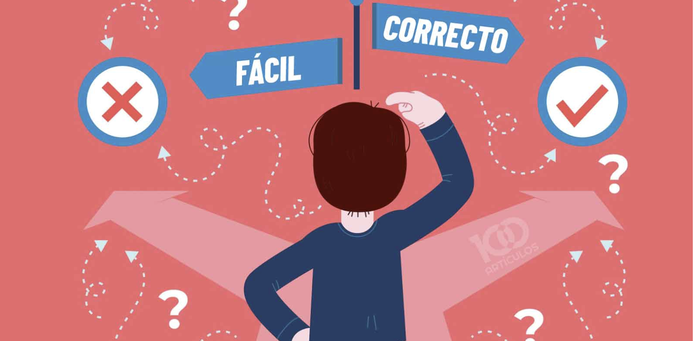
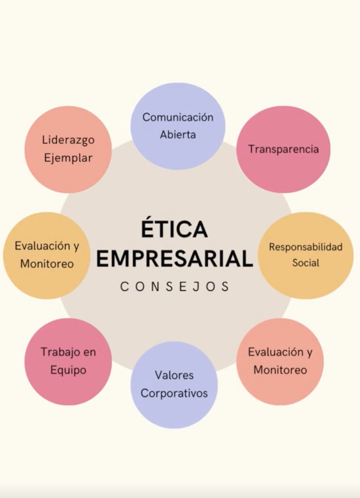
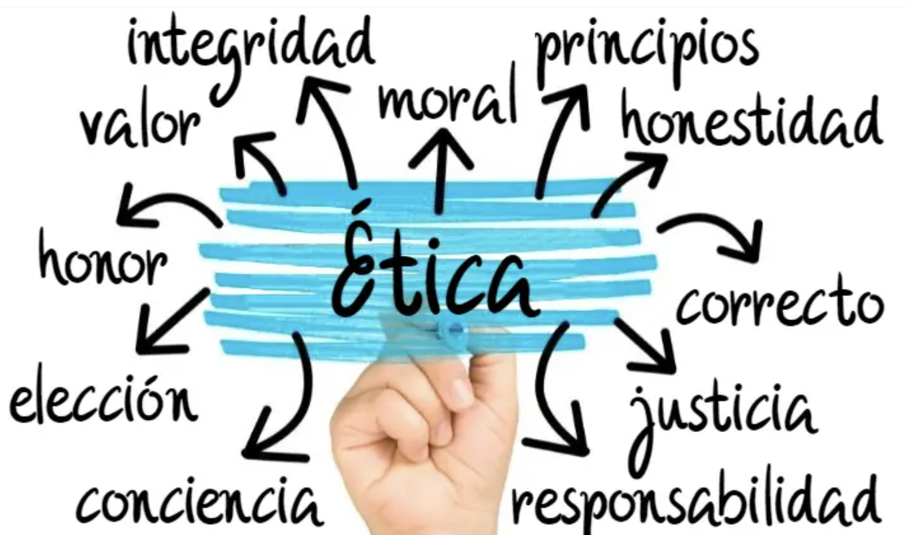
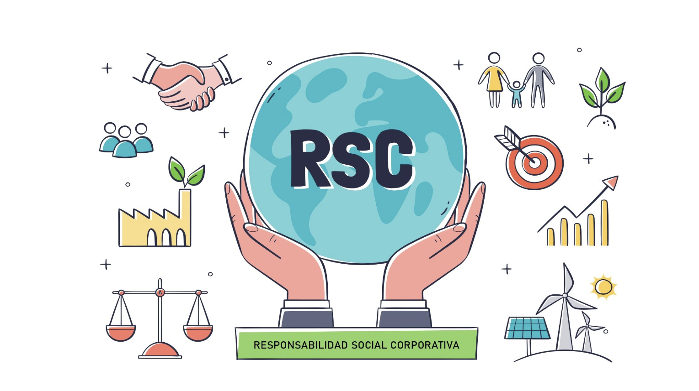
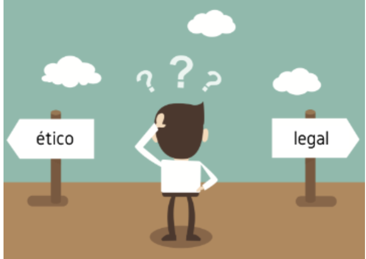
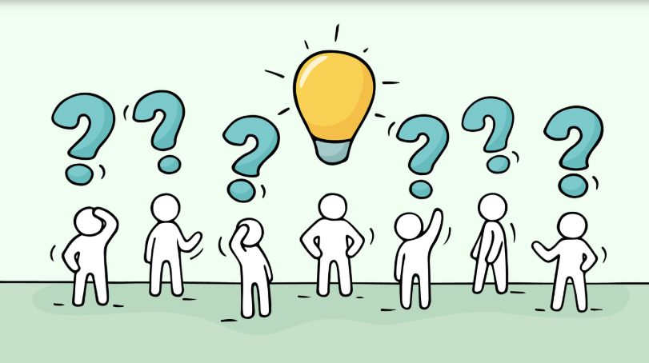
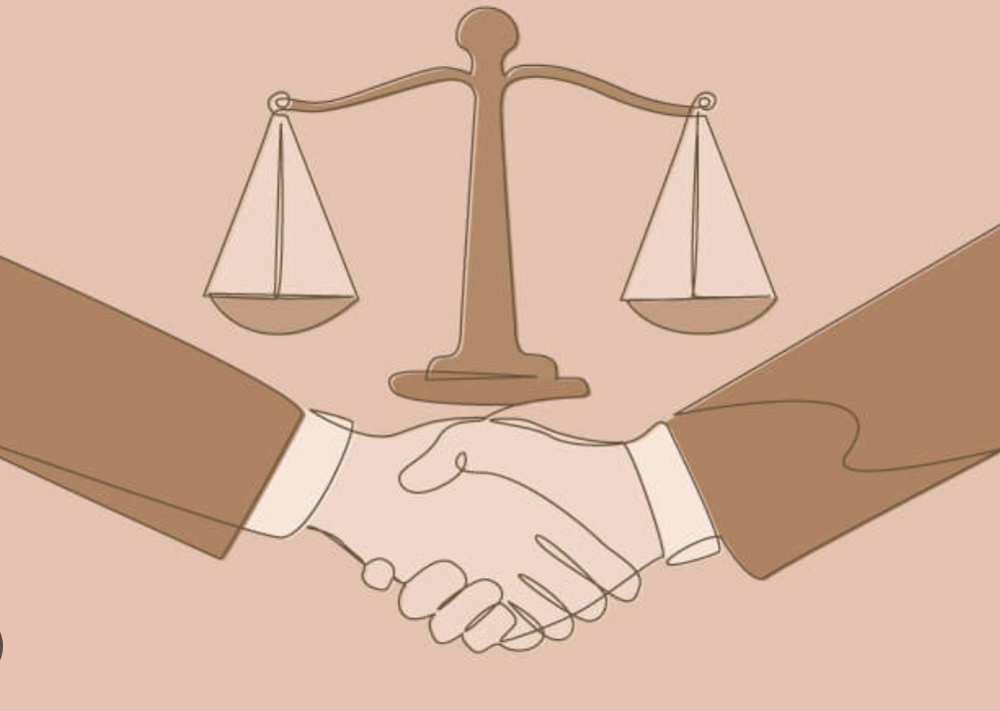

Text
¿Qué es la ética empresarial?
La ética empresarial se refiere al conjunto de valores, principios y normas morales que guían el comportamiento de las empresas y de las personas que las conforman. Estos principios orientan la forma en que las organizaciones toman decisiones y se relacionan con sus distintos grupos de interés, conocidos como stakeholders.
A diferencia de las leyes, que establecen normas obligatorias, la ética va más allá del cumplimiento legal y se enfoca en lo que es justo, correcto y socialmente responsable.

Text
Relación entre ética y derecho empresarial
El derecho empresarial regula la conducta de las empresas mediante normas jurídicas que buscan proteger a la sociedad. Sin embargo, una acción puede ser legal y al mismo tiempo cuestionable desde el punto de vista ético.
Por esta razón, las empresas éticamente responsables integran principios éticos en su gestión para prevenir riesgos legales, proteger su reputación y fortalecer la confianza de clientes, empleados e inversionistas.

Text
Principios éticos en los negocios
Entre los principales principios éticos que deben guiar la actividad empresarial se encuentran:
- "Honestidad y transparencia"
- "Integridad"
- "Justicia y equidad"
- "Responsabilidad social"
- "Respeto a los derechos humanos"
Estos principios contribuyen a construir relaciones sólidas y duraderas con todos los grupos de interés.

Text
Responsabilidad Social Corporativa (RSC)
La Responsabilidad Social Corporativa hace referencia al compromiso voluntario de las empresas de actuar de manera ética, considerando el impacto de sus decisiones en el ámbito social, económico y ambiental.
Las empresas socialmente responsables no solo buscan generar beneficios económicos, sino también aportar al bienestar de la comunidad, proteger el medio ambiente y promover condiciones laborales justas.

Text
Dilemas éticos en los negocios
Un dilema ético surge cuando una empresa enfrenta una situación en la que debe elegir entre diferentes alternativas que pueden generar conflictos entre intereses económicos, legales y morales.
Algunos ejemplos de dilemas éticos en los negocios incluyen:
- Manipulación de información financiera
- Publicidad engañosa
- Uso indebido de datos personales
- Prácticas laborales injustas
- El análisis de estos dilemas permite desarrollar pensamiento crítico y una toma de decisiones más responsable.

Text
Caso práctico: ética empresarial en la toma de decisiones
Una empresa descubre que puede reducir significativamente sus costos de producción utilizando materiales de menor calidad sin informar a los consumidores. Desde el punto de vista legal, la empresa podría no estar violando ninguna norma específica; sin embargo, esta decisión plantea un importante dilema ético.
Desde la ética empresarial, esta práctica resulta cuestionable, ya que afecta la transparencia, la confianza del consumidor y el principio de honestidad. Aunque el objetivo de la empresa sea maximizar sus beneficios, actuar de esta forma puede dañar su reputación, generar desconfianza en el mercado y afectar negativamente a sus stakeholders.
Una decisión ética responsable implicaría informar de manera clara a los consumidores sobre cualquier cambio en la calidad del producto, priorizando la honestidad y la responsabilidad social sobre el beneficio económico a corto plazo.
Este caso permite aplicar los principios de la ética empresarial y reflexionar sobre la importancia de la transparencia y la responsabilidad social en la toma de decisiones empresariales.

Text
Ideas clave sobre ética empresarial
- La ética empresarial va más allá del simple cumplimiento de la ley
- Las decisiones éticas fortalecen la confianza y la reputación de la empresa.
- La responsabilidad social corporativa busca equilibrar beneficios económicos, sociales y ambientales.
- Los dilemas éticos requieren análisis crítico y una toma de decisiones responsable.
